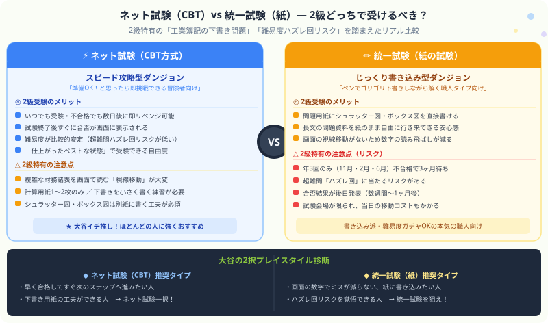

日商簿記2級 | 公開：2026年6月30日 | 更新：2026年6月30日
日商簿記2級｜ネット試験（CBT）vs 統一試験（紙）徹底比較
あなたはどっちのダンジョンで戦うべき？
著者：大谷 一輝（関西の大学3回生・日商簿記1級勉強中）
大
著者・大谷からひとこと
こんにちは、大谷です！
3級を終えて2級に進むとき、誰もが「2級ってネットと紙、どっちで受けるのが合格しやすいの！？」と迷いますよね（笑）。
実は2級は3級と違って、工業簿記（こうぎょうぼき）の下書きや商業の細かい計算が大量にあります。僕も初めて2級のネット試験の画面を見たとき、「えっ、この複雑な財務諸表（ざいむしょひょう）の数字を画面で見ながら、手元で電卓叩くの！？頭がバグる！なんじゃこりゃ、紙の方が絶対に楽じゃん！」と本気で焦りました。
今回は、2級ならではの両者のメリット・デメリットを徹底比較し、あなたが選ぶべき最短の攻略ルートをナビゲートします！
また、モチベ維持のために、記事の末尾にある【いいねボタン】もポチッと押してもらえると、めちゃくちゃ励みになります！
先に結論：悩んだらネット試験（CBT方式）を選んでください。2級は覚えることが多いため、「仕上がったベストなタイミングでいつでも受験できる」メリットが他の何よりも強力です。ただし「画面で複雑な資料を読むとミスが減らない人」は紙の統一試験も有力な選択肢です。
まず知っておきたい「2級ならではの試験環境の違い」
3級と2級では、同じ「ネット試験か紙の試験か」という選択でも、その重みがまったく違います。2級には3級にはない特有の難しさがあり、それが受験方式の選択に直接影響するからです。
2級で増える「下書きの量」の問題
3級の試験では、仕訳を書いたり簡単な計算メモをしたりする程度で乗り越えられました。ところが2級では、工業簿記（こうぎょうぼき）の問題で以下のような複雑な下書きが必要になります。
- シュラッター図（しゅらったーず）：標準原価計算（ひょうじゅんげんかけいさん）の固定費差異を分解するための2軸グラフ。縦軸×横軸で3点を打って差異を視覚化します。
- ボックス図：総合原価計算（そうごうげんかけいさん）の仕掛品（しかかりひん）を完成品と月末に按分（あんぶん）するためのT字ボックス。手書きの図を見ながら解くのが一番速い。
- T字勘定：商業簿記の連結（れんけつ）や本支店会計（ほんしてんかいけい）でも、勘定の流れを手書きで追う場面が増えます。
ネット試験の場合、これらの下書きを「渡された計算用紙（1〜2枚）」だけで完結させなければなりません。紙の試験なら問題用紙に直接書き込めます。この差が、2級では3級の比にならないほど大きく影響します。
CBT vs 紙の試験 ― 2択ビジュアル比較

図：CBT（スピード攻略型ダンジョン）vs 統一試験（じっくり書き込み型ダンジョン）の2択比較
上の図で全体像がつかめたと思います。以下では、それぞれをさらに深く掘り下げて解説します。
ネット試験（CBT方式）を深く掘り下げる
CBT（Computer Based Testing）とは、専用のPCとキーボードで解答する方式です。全国のCBT試験センターでほぼ毎日受験できます。
メリット①〜④ ： 2級独学者に刺さる4つの強み
「準備OK！」と思った瞬間に受験を予約できる
2級は覚える論点が多く、「もう少し仕上げてから受けたい……」という場面が頻繁にあります。ネット試験なら「明日受けよう」でも「2週間後に受けよう」でも自分で決められます。勉強のピークと受験日がズレることなく、ベストコンディションで本番に挑めるのが最大の武器です。
不合格でもすぐにリベンジできる
もし試験に落ちても、所定の日数（センターによって異なりますが概ね7〜10日程度）が過ぎれば再受験可能です。紙の統一試験なら次まで3〜4ヶ月待たされますが、ネット試験は「あの問題パターンに集中してもう一度！」とすぐに動けます。勉強のモメンタムを切らさずにいられるのは精神的に大きなプラスです。
試験終了後すぐに合否が画面に表示される
解答終了ボタンを押した瞬間、合否と点数がその場で表示されます。紙の統一試験のように「結果が出るまで数週間待つ」という心理的プレッシャーが一切ありません。合格なら即お祝い、不合格なら即作戦変更。フィードバックが早い分だけ、次のアクションも速くなります。
難易度が比較的安定している
後述する紙の統一試験のように「超難問が大量に出るハズレ回」というリスクがCBT方式では発生しにくい構造になっています。問題のプールが大きく、毎回ランダム出題されるため、特定の回だけ異常に難化することが起きにくいです。
注意点 ① ② ③ ：2級特有の「CBTの罠」
⚠ 罠①：複雑な資料の「視線移動」地獄
3級なら画面上の問題文を追うだけで済みましたが、2級の第3問（決算整理・財務諸表）では何十項目もの修正事項が並ぶ長い問題文を読みながら、手元で電卓を叩き、答えを別ウィンドウの解答欄に入力します。紙なら手元でくるくる裏返したり、問題用紙に印をつけながら進める資料を、画面スクロールで追わなければなりません。これが想像以上にストレスになります。
⚠ 罠②：計算用紙は1〜2枚のみ ― 下書きの「密度」が問題
試験開始時に手渡される計算用紙はほとんどのCBT会場で1〜2枚程度です。工業簿記のシュラッター図（しゅらったーず）を描いて、その横にボックス図（ぼっくすず）を書いて、さらに第3問の精算表の下書きをしていたら、あっという間に紙が埋まります。「1枚を4区画に分割して問題別にエリアを割り当てる」などの練習を、本番前の模試で絶対に積んでおく必要があります。
⚠ 罠③：キーボード入力のタイプミスに注意
3級より桁数が大きい数字（例：製造原価12,345,678円など）をキーボードで入力するシーンが増えます。急いでいると桁を1つ増やしてしまうタイプミスが発生します。最後の5分で必ず全問の入力数字を目視確認する習慣を、模試の段階からつけておきましょう。
CBTの罠を乗り越える「白紙ハック術」はこちら：
計算用紙の使い方・時間配分・解く順番の詳細は
ネット試験の問題構成・時間配分を完全解説 の記事で解説しています。CBTで受験する予定の方は本番前に必読です。
紙の統一試験を深く掘り下げる
統一試験とは、日本商工会議所（にほんしょうこうかいぎしょ）が年3回（11月・2月・6月）実施する、いわゆる従来の筆記試験形式です。
メリット① ② ③ ：紙の試験ならではの「絶大な書き込み優位性」
シュラッター図やボックス図を問題用紙の余白に直接書けます。「この資料の数字はここから来た」という矢印や印を書き込みながら読み進められるため、第3問・第5問の複雑な問題でも情報の整理がしやすい。工業簿記で高得点を狙う人には大きな武器です。
第3問の決算整理仕訳では、問題用紙を前後にめくりながら資料を確認できます。画面ではスクロールしかできませんが、紙なら2ページ分を同時に広げて見比べることも可能。視線移動のストレスが格段に少ないです。
注意点 ：2級特有の「紙の罠」
⚠ 最大のリスク：「超難問ハズレ回」に当たる可能性
過去に、予備校の講師でさえ「こんな問題、受験生に解けるはずがない」と頭を抱えた回が存在します。特定の論点が突然深掘りされたり、見慣れない形式の複合問題が出たりするのが「ハズレ回」です。年3回しか機会がないため、1回のハズレが致命傷になりえます。充分な実力をつけていても、このリスクをゼロにはできない点が統一試験の最大の弱点です。
⚠ 不合格なら3〜4ヶ月待ち ― モチベーション管理が難しい
試験に落ちると次の受験まで間が空きます。この間に仕事・学業が忙しくなったり、別の勉強を始めたりして、2級学習のモメンタムを完全に失うケースが少なくありません。ネット試験なら「すぐリベンジ」できるので、この問題がほぼ起きません。
統一試験の結果発表は後日です。試験日から合否通知まで数週間〜1ヶ月程度かかる場合があります。転職・就職活動で「試験を受けたこと」を証明したいときに間に合わない可能性があるため、スケジュールには余裕を持ちましょう。
一覧比較表：CBT vs 統一試験（紙）
| 比較ポイント | ネット試験（CBT） | 統一試験（紙） |
|---|
| 受験機会 | ほぼ毎日（センター稼働日） | 年3回（11月・2月・6月） |
| 難易度の安定性 | 比較的安定 | ハズレ回リスクあり |
| 合否発表 | 試験終了後すぐに画面表示 | 後日（数週間〜1ヶ月後） |
| 再挑戦 | 数日後に即リベンジ可能 | 3〜4ヶ月待ち |
| 下書き用紙 | 計算用紙1〜2枚のみ | 問題用紙に直接書き込み可 |
| シュラッター図・ボックス図 | 別紙に小さく書く工夫が必要 | 問題余白にゴリゴリ書ける |
| 資料の読み方 | 画面スクロールで追う | 紙を自由にめくりながら追える |
| 合格証書の効力 | どちらも同等！効力に差はない |
あなたはどっちタイプ？2択プレイスタイル診断
以下のどちらのリストにより多くチェックが入るか確認してみてください。
- 早く合格してすぐ次のステップに進みたい
- 仕上がったタイミングでさっさと受験したい
- もし落ちても1〜2週間後に即リベンジしたい
- 計算用紙の使い方を事前に練習できる
- PC操作・キーボード入力に慣れている
- 難易度のバラツキより受験機会の多さを重視する
- 画面の数字を読むと読み飛ばしミスが減らない
- 問題用紙にシュラッター図を直接書き込みたい
- 年に数回の一発勝負の方がモチベーションが上がる
- 難易度ガチャのリスクを覚悟している
- 試験会場までの距離が問題ない
- 合否発表まで数週間待てるメンタルがある
大谷の最終結論：「最速合格」を目指すならネット試験一択
ほとんどの2級受験生にネット試験をおすすめする理由
2級は論点が広く、学習中に「この問題が苦手だからもう少し練習してから受けたい」という場面が何度も訪れます。紙の統一試験では、そのたびに3〜4ヶ月の受験チャンスを逃すことになります。
一方、ネット試験なら「PHASE3（PC模試）が終わった！70点安定してきた！来週受けよう！」というフローで動けます。勉強の仕上がりと受験日を完全に一致させられるのは、最速合格を目指す上で決定的なアドバンテージです。
CBTの「計算用紙が少ない」という弱点は、事前の模試で計算用紙の使い方を練習すれば必ず克服できます。対して、「年3回しか受験機会がない」というデメリットは、どれだけ頑張っても変えることができません。
ただし、「どうしても画面の長文資料を読むと数字を読み飛ばしてしまう」「問題用紙に下書きしないと工業簿記が全然解けない」という人は、統一試験を選ぶ価値があります。自分の学習スタイルに合った方を選ぶことが、最終的には一番の近道です。
⚡ ネット試験（CBT）を選ぶべき人 ― 大谷の結論
「早く・確実に・自分のペースで合格したい」すべての独学者へ。計算用紙の使い方は練習で克服できます。ネット試験で3ヶ月以内の最速合格を目指しましょう。
→ 次のアクション：最速3ヶ月合格ロードマップで受験計画を立てる
✏ 統一試験（紙）を選ぶべき人 ― 大谷の結論
「画面でのミスが致命的・問題用紙に直接書き込む環境が必須」という人へ。ハズレ回のリスクを承知の上で、次の統一試験日（第169回：2026年11月15日予定）を目標に据えて全力で準備しましょう。
→ 次のアクション：統一試験の日程と合格ロードマップを確認する
よくある質問 Q&A
Q. ネット試験と紙の試験、どちらが合格しやすいですか？
試験の合格基準（70点以上）も範囲も同じです。ただし難易度の安定性という点ではCBTが有利で、超難問ハズレ回に当たるリスクがない分、実力通りの結果が出やすい傾向があります。紙の試験で激難回に遭遇してしまうと、充分な実力があっても落とされるリスクがあります。
Q. CBTの計算用紙は何枚もらえますか？
試験センターによって異なりますが、一般的に1〜2枚程度です。追加が必要なときは挙手して試験官に申し出られる会場もありますが、本番中に手を挙げる心理的ハードルは高いので、最初からもらえる枚数で完結できるよう練習しておきましょう。
Q. 超難問の「ハズレ回」はどれくらいの頻度でありますか？
年3回のうち少なくとも1回は「いつもより難しい」回があると言われています。すべての回が激難化するわけではありませんが、特に連結会計や難問の本支店会計が第2問に出た回では合格率が大幅に下がる傾向があります。統一試験を受ける場合は、どの回が来ても耐えられる実力をつけることと、万一のリスクを覚悟することが必要です。
Q. 両方受けて、先に受かった方でいいですか？
もちろんその戦略もありです！ネット試験でチャレンジしながら、念のため近い統一試験も申し込んでおく「二刀流」は費用がかかりますが、合格する確率を上げたい人には有効な作戦です。CBTで合格できれば統一試験の受験料が無駄になりますが、その分早く合格できるメリットの方が大きいです。
次のクエストへ進もう
受験方式が決まったら、次は具体的な試験日程と3ヶ月の動き方を確認しましょう。
🗓
試験日程 ＆ 合格ロードマップ
日商簿記2級の試験日程と最速3ヶ月合格ロードマップ【ネット試験フル活用版】
CBT・統一試験の最新スケジュールと、PHASE1〜4の3ヶ月攻略クエストマップを掲載。今日から何を・どの順番でやるかが一目でわかる。
🖥
ネット試験 対策
ネット試験の問題構成・時間配分と「解く順番」を完全解説
CBTで受験する人必読。90分で70点をもぎ取るための解答順、計算用紙の白紙ハック術を解説。
⚡
工業簿記 演習ロードマップ
工業簿記の演習ロードマップ（材料費→CVP分析まで）
シュラッター図・ボックス図の練習も含め、工業簿記を論点順に攻略するロードマップ。
スタディクエストで学習進捗を管理しよう
今日の勉強時間・クリアした論点・ボス討伐数をRPG感覚で記録。CBTの本番に向けたカウントダウンも設定できます！
無料で始める →